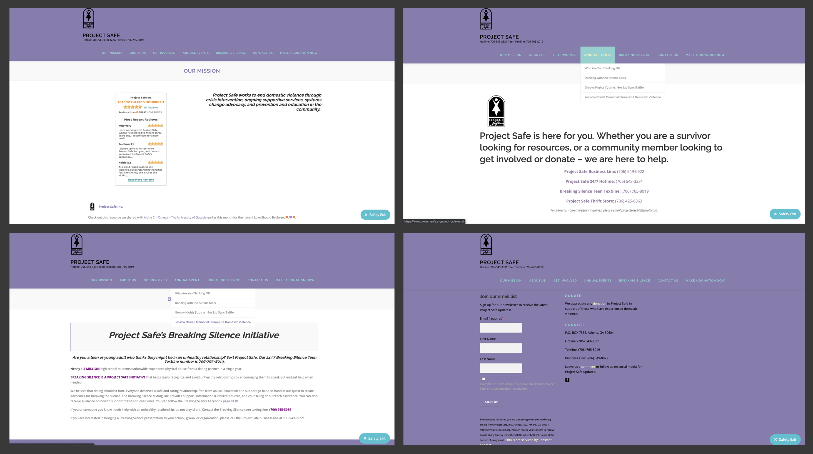
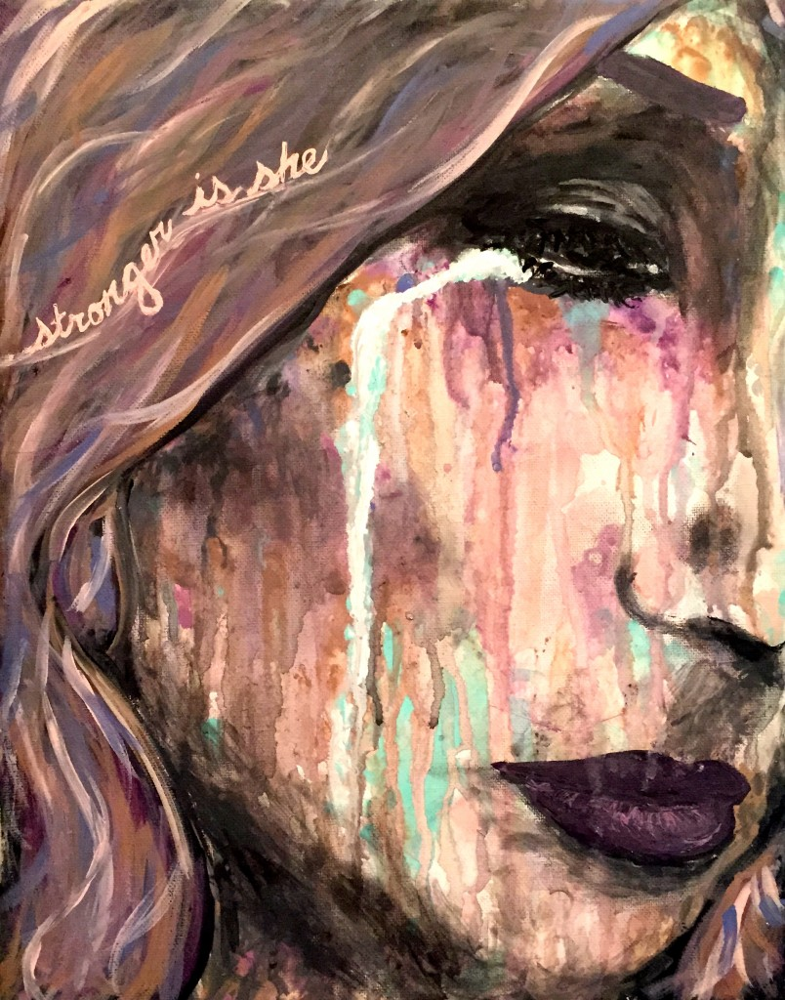

Research
This was one of the most important steps in the process, knowing your client. I did basic research on Project Safe itself first and then did some secondary research more focused on domestic violence. I also was able to get the chance to interview some users as well indirectly.
Primary Research
I began my research by looking over the website in its individual sections and also as a whole. This entire website is not bad in any means, but with their mission goal, it doesn’t give off a good feeling, meaning one that doesn’t emphasize the mission. I believe it has great potential, and I'm glad I get to be a part of that. Each page individual just seems really empty. There are basically just a few sentences on the topic, and it is rare to see a picture of anything, not even event details, etc. Each tab on the navbar either has no extra drop-offs, or like 3-4 which is a little much. It has a really cool tone, and that was the first thing I noticed. These seems more of a website that should be more of a warm tone.
The Home page just has their mission in small text on the right-hand side, then the left side has reviews. Which is unusual for a Home page, usually there is a page dedicated to those. There are no images or drawings or anything. There Contacts page is pretty self-explanatory, what their message is and all the forms of connection with them. Their Breaking Silence page is dedicated to a little bit of facts when it comes to abusive/unhealthy relationships. It's very simple and straight to the point. The Footer at the bottom once again has all their contact information, but also a forum section for you to sign up for their Email list, to get the latest updates and all.
The following images consist of some of the advertising images of flyers I was able to find, most of these are from their Facebook page. They are good at posting often to really keep peoples hope up, no matter who is the one viewing it. There is some basic information about domestic violence and what to look for, some cute examples of volunteer’s experience and time in the company, some event flyers, they cover a majority of information that not only gives basic advice, but really shows what their community is like so if you were ever to participate in any form, you get a feel for it.
Secondary Research
Domestic violence (also referred to as intimate partner violence (IPV), dating abuse, or relationship abuse) is a pattern of behaviors used by one partner to maintain power and control over another partner in an intimate relationship. ~ Hotline
It doesn’t matter what the person looks like, their skin color, race, age, anything. It happens everywhere to anyone. Some people can even act normal in one scenario, then in another it is like they are a completely different person. There are tons of types of abuse, ranging from physical, emotional, verbal, which are just a few of the most common ones. It doesn’t matter which one it is, you never know how much a single thing can affect someone else. Watch all of your actions and think of them beforehand.
I highly recommend looking around at the links provided below for you to become aware of some signs and things to look out for whether it be someone you know, a random stranger, maybe even you. It is important to know the situation and how to act to it. I have also provided a few links that have some survivors telling their stories and advice they want other people to know.
When it comes to the design of websites for this topic specifically, they all tend to stay with the color purple in some shade, because purple is the representative color of domestic violence. But they are very simple in their design, because it is not an easy topic, and needs to be simple and welcoming, because people either come here for 2 things: they need help or want to help. Things need to be clear and easy to navigate, which is very beneficial. They are meant to be able to persuade you with words, not scare you and show images to maybe trigger something. The use of images is very minimal, unless it’s something along the lines of artwork made to motivate them, pictures of volunteers, sponsors, etc.
These are a list of some of my resources.